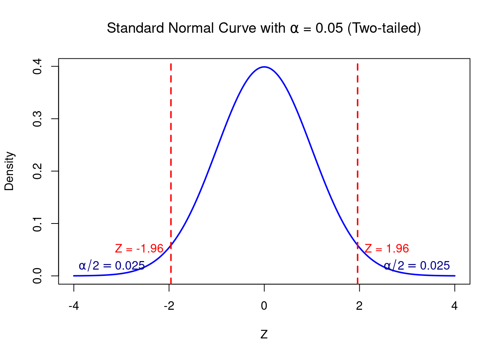

an interval that contains at least a specified proportion \(\gamma\) of the population, with a specified degree of confidence, \(100 \left( 1 - \alpha\right)\%\)
Let \(\mathcal{X} = \left\{ X_1, X_2, \dots, X_n \right\}\) be a random sample from univariate distribution \(F(\cdot)\) and suppose \(X \sim F(\cdot)\), where \(X\) is independent of the random sample, then a subset of \(\mathbb{R}\), say \(T = T (\mathcal{X})\), computed from the random sample, is a \(\gamma\)-content \(100 \left( 1 - \alpha\right)\%\)-confidence tolerance interval for \(X\) if it satisfies the ff: (The probability (over all possible samples \(\mathcal{X}\)) that the tolerance interval \(T\) constructed from the sample will capture at least a proportion \(\gamma\) of the population is equal to \(1-\alpha\))
If I keep collecting samples and building intervals over and over, then 95% of the time, those intervals will contain at least 90% of the population. - That’s a (\(\gamma\), \(1-\alpha\)) tolerance interval.
\[
P_{\mathcal{X}} \left\{ P_X \left( X \in T \mid \mathcal{X} \right) \geq \gamma \right\} = 1 - \alpha
\]
set \(T\) could be of the form:
\(\left( L(\mathcal{X}), U(\mathcal{X}) \right)\) for a two-sided tolerance interval
\(\left(-\infty, U(\mathcal{X}) \right)\) for a one-sided upper tolerance interval
\(\left( L(\mathcal{X}), +\infty) \right)\) for a one-sided lower tolerance interval
\(U(\mathcal{X})\) and \(L(\mathcal{X})\): upper and lower tolerance limits
sample use case: deriving appropriate process capability limits (\(U(\mathcal{X})\) and \(L(\mathcal{X})\)) for a manufactured product (\(X\)), so that with a given level of confidence (\(1 - \alpha\)), they contain the capability measurements of at least a specified proportion of units (\(\gamma\)) from the sampled manufacturing process (ie, gusto mo may confidence ka na yung tolerance interval mo, contains \(\gamma\) proportion nung samples)
two-sided interval
What interval will contain \(p\) percent of the population measurements?
Lower tolerance limit: \(Y_L = \hat{Y} - k_2s\)
Upper tolerance limit: \(Y_L = \hat{Y} + k_2s\)
one-sided intervals
What interval guarantees that \(p\) percent of population measurements will not fall below a lower limit? Lower tolerance limit: \(Y_L = \hat{Y} - k_1s\)
What interval guarantees that \(p\) percent of population measurements will not exceed an upper limit? Lower tolerance limit: \(Y_U = \hat{Y} + k_1s\)
Parametric Tolerance Intervals
Use the method for a parametric distribution if you can safely assume that your sample comes from a population that follows that distribution.
If your data follow a parametric distribution, then a method that uses that distribution is more precise and economical than the nonparametric method. A method that uses a distribution achieves smaller margins of error with fewer observations, as long as the chosen distribution is appropriate for your data.
Suppose \(X_{(1)}, X_{(2)}, \dots, X_{(n)}\) are order statistics of a random sample from a population with a univariate continuous distribution function \(F(x)\).
Wilk’s approach: 2 sided interval
sets values \(L(\mathcal{X}) = X_{(r)}\) and \(U(\mathcal{X}) = X_{(s)}\) where \(r < s\), as the limits of the \(\gamma\)-content \(100 \left( 1 - \alpha\right)\%\)-confidence tolerance interval \(\left( L(\mathcal{X}), U(\mathcal{X}) \right)\)
The values of \(r\) and \(s\) are chosen to satisfy \(1 \le r \le s \le n\) and \(s-r=m\) where \(m\) is the smallest value for which \(P(Y \le m-1) \ge 1-\alpha\), and \(Y \sim \text{Binomial}(n, \gamma)\). It is customary to take the value of \(s\) to be equal to \(n-r+1\), as suggested by Wilks et.al. so that
the nonparametric interval is given by \((X_{(r)}, X_{(n-r+1)})\)
sets \(L(\mathcal{X}) = X_{(r)}\) as the lower limit of the \(\gamma\)-content \(100 \left( 1 - \alpha\right)\%\)-confidence tolerance interval.
The value of \(r\) is taken to be the largest integer for which \(P(Y \ge r \mid n, 1- \gamma) \ge 1 - \alpha\) where \(Y \sim \text{Binomial}(n, 1-\gamma)\).
The non parametric one-sided lower tolerance interval is given by \((X_{(r)}, \infty)\)
sets \(U(\mathcal{X}) = X_{S}\), where it can be shown that
\(s=n-r+1\) and \(r\) is the value derived for the lower tolerance limit.
The nonparametric one-sided upper tolerance interval is given by \((-\infty, X_{(n-r+1)})\)
There is a minimum sample size requirement in computing the nonparametric tolerance intervals. This depends on the values of \(\gamma\) and \(1-\alpha\)
The coverage probabilities associated with nonparametric tolerance intervals are known to be conservative.
Although in this study we shall only be using Wilks’ approach, we mention that recently some developments aimed at improving coverage probabilities of nonparametric tolerance intervals have been available in literature.
Univariate Example
Suppose that we take a sample of \(N=25\) silicon wafers from a lot and measure their thickness in order to find tolerance limits within which a proportion \(p = 0.90\) of the wafers in the lot fall with confidence \(\alpha = 0.99\). Since the standard deviation, \(s\), is computed from the sample of 25 wafers, the degree of freedom is \(\nu = N - 1\)
## "Direct" calculation of a tolerance interval.## Read data and name variables.# URL of the dataset#url <- "https://www.itl.nist.gov/div898/handbook/datasets/MPC62.DAT"# Download the file (you can specify a path where you want to save it)# download.file(url, destfile = "MPC62.DAT")# Load the dataset into Rmdat =read.table("MPC62.DAT",header=FALSE, skip=50)colnames(mdat) =c("cr", "wafer", "mo", "day", "h", "min", "op", "hum", "probe", "temp", "y", "sw", "df")head(mdat)
tolerance package, version 3.0.0, Released 2024-04-18
This package is based upon work supported by the Chan Zuckerberg Initiative: Essential Open Source Software for Science (Grant No. 2020-255193).
Through tolerance package
pout =normtol.int(mdat$y, alpha=0.01, # chosen such that 1-alpha is the conf levelP=.90, # proportion of the pop to be covered by this TIside=2, # 1-sided or 2-sided tolerance intervalmethod ="HE2", # method for calculating the k-factorsm=100# maxnum of subintervals to use in the integrate fcn )pout
TI Interpretation: In this example, you can be 99% confident that at least 90% of all thickness measurements are between approximately 97.0030038 and 97.1366762.
Manually deriving the endpoints:
The \(k\) factors are determined so that the intervals cover at least a proportion \(p\) of the population with confidence \(\alpha\). The value of \(p\) is also referred to as the coverage factor. This assumes normal distribution. This is the approximate value for \(k_2\) from Howe, 1969.
## Compute the approximate k2 factor for a two-sided tolerance interval. ## For this example, the standard deviation is computed from the sample,## so the degrees of freedom are nu = N - 1.N =25nu = N -1# df used to estimate the sdp =0.90# proportiong =0.99# alphaz2 = (qnorm((1+p)/2))**2# critical values of the normal distributionc2 =qchisq(1-g,nu) # lower critical values of the chi-square distributionk2 =sqrt(nu*(1+1/N)*z2/c2)k2
[1] 2.494063
## Compute the exact k2 factor for a two-sided tolerance interval using ## the K.factor function in the tolerance library## "HE2" is a second method due to Howe, which performs similarly to the ## Weissberg-Beatty method, but is computationally simplerK2 =K.factor(n=N, f=nu, alpha=1-g, P=p, side=2, method="HE2", m=1000)K2
plottol(pout, mdat$y, plot.type ="both", side ="two", x.lab ="X")
Parametric and univariate
Given a sample size \(n\), sample mean \(\bar{x}\), and sample standard deviation \(s\), the two-sided normal tolerance interval is:
\[
\bar{x} \pm k \cdot s
\]
where \(k\) is a factor based on:
\(n\), confidence level, \((1-\alpha)\), and population coverage \(\gamma\)
In R, to find the smallest value \(m\) such that \(P(Y \le m-1) \ge 1-\alpha\) for a binomial distribution \(Y \sim \text{Binomial}(n, \gamma)\), you can use the cumulative distribution function (CDF) for the Binomial distribution, which is available in the pbinom() function.
The condition \(P(Y \le m-1) \ge 1-\alpha\) suggests that you are looking for the quantile \(m\) such that the cumulative probability is at least \(1-\alpha\).
npout =nptol.int(mdat$y,alpha =0.01, P =0.90, side =2, method ="WILKS",upper =NULL, lower =NULL)npout
alpha P 2-sided.lower 2-sided.upper
1 0.01 0.9 97.014 97.114
TI Interpretation: You can be 99% confident that at least 90% of all thickness measurements are between approximately 97.014 and 97.114.
Manually deriving the endpoints:
Wilk’s approach: 2 sided interval
- sets values \(L(\mathcal{X}) = X_{(r)}\) and \(U(\mathcal{X}) = X_{(s)}\) where \(r < s\), as the limits of the \(\gamma\)-content \(100 \left( 1 - \alpha\right)\%\)-confidence tolerance interval \(\left( L(\mathcal{X}), U(\mathcal{X}) \right)\)
- The values of \(r\) and \(s\) are chosen to satisfy \(1 \le r \le s \le n\) and \(s-r=m\) where \(m\) is the smallest value for which \(P(Y \le m-1) \ge 1-\alpha\), and \(Y \sim \text{Binomial}(n, \gamma)\).
- It is customary to take the value of \(s\) to be equal to \(n-r+1\), as suggested by Wilks et.al. so that - the nonparametric interval is given by \((X_{(r)}, X_{(n-r+1)})\)
# 1 <= r < s < N = 25# let s = n−r+1# s - r = (n-r+1) - r = m # (n-m+1)/2 = r# Parametersn <-25# Number of trialsgamma <-0.90# Probability of success in each trialalpha <-0.01# Significance level (1 - confidence level)# Find the smallest m such that P(Y <= m-1) >= 1 - alpha ie find the # smallest value of m such that the cumulative probability just reaches # or exceeds the confidence level 1-alpham <-qbinom(1- alpha, size = n, prob = gamma)r = (n-m+1)/2s = m+rsort(mdat$y)[ceiling(r)]; sort(mdat$y)[floor(n-r+1)]
[1] 97.014
[1] 97.114
plottol(npout, mdat$y, plot.type ="both", side ="two", x.lab ="X")
Lognormal & normal distribution
\(X \sim \mathcal{N}(\mu, \sigma^2)\) means \(X\) is normally distributed.
\(Y \sim \{Lognormal}(\mu, \sigma^2)\) means \(\log Y \sim \mathcal{N}(\mu, \sigma^2)\)
A lognormal random variable is one whose logarithm is normally distributed.
If you assume the data itself is normal (norm): The raw data \(X \sim \mathcal{N}(\mu, \sigma^2)\).
If you assume the log of the data is normal (lnorm): You are modeling \(\log(X) \sim \mathcal{N}(\mu, \sigma^2)\) so \(X \sim \text{Lognormal}(\mu, \sigma^2)\)
Mean is zero in the log scale means \(\log(Y) \sim \mathcal{N}(0, \sigma^2)\) which is equivalent to \(Y \sim \text{Lognormal}(\mu, \sigma^2)\)
This also tells that the mean of \(Y\) is not 0. In fact, \(\mathbb{E}[Y] = e^{\mu+\sigma^2/2}\) so if \(\mu = 0\) then, \(\mathbb{E}[Y] = e^{\sigma^2/2} > 1\)
hist(kde_cdf(exp(log_x), exp(log_x), find_silver_bw(exp(log_x))), probability =TRUE, main ="Histogram of PIT-transformed values",xlab ="PIT values")abline(h =1, col ="red", lwd =2)
Nonparametric simultaneous tolerance intervals for small dimensions based on kernel density estimates
Abstract
This study aims to contribute to the existing knowledge on the computation of STIs by developing procedures to compute nonparametric STIs with accurate coverage.
The tolerance interval’s property of containing a specified proportion of sampled population values with high degree of confidence makes its computation meaningful.
Whenever there are several populations, it may be of interest to perform simultaneous inference. For this reason, this study proposes methods to construct simultaneous tolerance intervals (STIs).
Furthermore, since in many cases of practical applications the underlying distribution is unknown, the proposed STIs are derived under a nonparametric setting.
The proposed procedures andalgorithms are then assessed through performance metrics, such as estimated coverage probabilities and expected lengths.
The performance of the proposed methodology is also compared with the Bonferroni correction approach.
The proposed methods show accurate results, with coverage probabilities close to the nominal level.
The nonparametric STIs computed using the proposed methods are generally better than the ones obtained through a Bonferroni-corrected approach.
A real-life application on the assessment of liver function is presented to illustrate the use of the proposed method.
More Definitions
Simultaneous inference
- Whenever there are several populations, it is of interest to construct simultaneous statistical intervals from the sample data.
- Having several simultaneous interval estimates that are naïvely constructed only increases the likelihood that at least one of such inferential statements does not hold true.
- For this reason, this study considers integrating the criteria for simultaneous inference in computing statistical tolerance intervals so that the resulting coverage probabilities are close to the nominal confidence level.
Current studies
- The STIs that are available in literature rely on the assumption of normality. However, in many applications, this assumption is unwarranted. For instance, Wright and Royston (1999) point out that positive skewness is common among laboratory measurements, which are the bases for the construction of reference intervals. Thus, there is a need to establish STIs through nonparametric means.
- While approaches to compute nonparametric tolerance regions are available in some existing studies [see, for instance Young and Mathew (2020) and Lucagbo (2021)], these studies do not use the criterion for simultaneous inference.
Kernel density estimation
- The methodologies proposed in this study involve estimating the Cumulative Distribution Function (CDF) through kernel density estimation (KDE), which is a generalization of density estimation through histograms.
- A weight function in histogram construction is simply replaced by another function, called the kernel function, denoted by \(K(\cdot)\), which satisfies the ff conditions: \(K(\cdot) \ge 0\) and \(\int^{\infty}_{-\infty} K(x) dx = 1\)
- This function is often taken as a symmetric density function, such as a standard normal density function.
- KDE, as a nonparametric statistical tool, estimates the unknown Probability Density Function (PDF) or CDF.
- KDE Methodology: Suppose that \(X_1, X_2, \dots, X_n\) is a random sample from some unknown PDF \(f(x)\) and CDF \(F(x)\). Then, KDE estimates the PDF as \(\hat{f}(x) = \frac{1}{n} \sum^n_{i=1} \frac{1}{h} K \left( \frac{x-X_i}{h} \right)\) where
- \(h\) is the bandwidth that acts as a smoothing parameter. Here, larger values of \(h\) result in smoother density estimates. As it gets smaller, the density gets rougher. Optimal choices for \(h\) include Silverman’s rule of thumb given by: \(h = 0.9 n^{-\frac{1}{5}} min \left\{ S, \frac{IQR}{1.34}\right\}\) where \(S\) is the standard deviation of the sample data and IQR is its interquartile range.
- Common choices for \(K(\cdot)\) include Gaussian kernel and the Epanichikov kernel.
- This study uses the Gaussian kernel and estimtes the CDF by plugging the PDF of the standard normal distribution into \(K(\cdot)\) and integrating the resulting quantity, giving \(\hat{F}(x)=\frac{1}{n} \sum^n_{i=1} \Phi \left( \frac{x-X_i}{h} \right)\) where \(\hat{F}(x)\) is the estimate of \(F(x)\) and \(\Phi\) is the CDF of the standard normal distribution.
Methodology
Data layout & statistical criterion
Here discusses the data to be used in computing STIs and the criterion to be followed.
Data: random sample \(\mathbf{X}_1, \mathbf{X}_2, \dots, \mathbf{X}_n\) of multivariate measurements with dimension \(p\), coming from an unknown continuous distributions, say \(F_X(\cdot)\). Each \(\mathbf{X}_i = \left( X_{i1}, X_{i2}, \dots, X_{ip}\right)'\) is a \((p \times 1)\) column vector of measurements taken from the \(i\)th subject, \(i = 1, 2, \dots, n\)
Two sided STIs
Objective: We want to construct two-sided STIs for each component of \(\mathbf{X} = (X_1, X_2, \dots, X_p)'\). That is, we want to find a region of the form \((c_1, d_1) \times (c_2, d_2) \times \dots \times (c_p, d_p)\) where \(c_j\) and \(d_j\), \(j = 1, 2, \dots, p\), are functions of the random sample \(\mathbf{X}_1, \mathbf{X}_2, \dots, \mathbf{X}_n\) such that
The quantities \(\gamma\) and \(\left( 1-\alpha\right)\) are between 0 and 1 and are referred to as the content probability and confidence level.
Criterion: With a confidence level of \(100(1-\alpha)\%\), each marginal interval \((c_j, d_j), j = 1, 2, \dots, p\), should have a content of at least \(\gamma\).
One sided STI
Objective: We want to construct 1-sided STIs.
These only have either lower limits only or upper limits only. That is, we want to find a region of the forms
where \(c_j\) and \(d_j\), \(j=1, 2, \dots p\), are still functions of the random sample \(\mathbf{X}_1, \mathbf{X}_2, \dots, \mathbf{X}_n\), such that
Idea:The process of obtaining simultaneous tolerance limits for the random vector \(X = \left( X_1, X_2, \dots, X_p \right)\) with \(p\)-variate distribution \(F_X(\cdot)\) can also be thought of as constructing simultaneous tolerance limits for the \(p\) populations represented by the \(p\) components of \(\mathbf{X}\).
Notes: Methodologies here make no assumptions about the correlation structure of \(\mathbf{X}\) and so procedures also apply to case where \(X_1, X_2, \dots, X_p\) are independent.
Method: Nonparametric two-sided STIs
Reference: Lucagbo (2021), who develops nonparametric rectangular tolerance regions. The main idea of the proposed methods is to transform each component in \(\mathbf{X}\).
Let \(F_j(\cdot)\) be the CDF of the continuous random variable \(X_j\), the \(j\)th component of \(\mathbf{X}\). Moreover, let \(k \equiv k(\mathbf{X}_1, \mathbf{X}_2, \dots, \mathbf{X}_n)\) and \(k' \equiv k'(\mathbf{X}_1, \mathbf{X}_2, \dots, \mathbf{X}_n)\) be some functions of the random sample. The \(\gamma\)-content, \(100(1-\alpha)\%\) confidence two-sided STIs for \(\mathbf{X}\) are set to be of the following form:
For each \(j = 1, 2, \dots, p\), the end points of the \(j\)th interval are expressed as quantiles of \(X_j\). And aligned with the criterion, the values of \(k\) and \(k'\) are computed to satisfy the following condition:
\[
P_{\mathbf{X}_1, \mathbf{X}_2, \dots, \mathbf{X}_n} \left\{ P_{X_j} \left( k' < F \left( X_j \right) < k \mid \mathbf{X}_1, \mathbf{X}_2, \dots, \mathbf{X}_n \right) \ge \gamma, \forall j = 1, 2, \dots, p \right\} = 1 - \alpha
\]
Note that \(F_j(X_j), j = 1, 2, \dots, p\) are identically distributed as \(U(0, 1)\) random variables. Hence, the choice of common \(k\) and \(k'\) for the \(p\) components.
Moreover, using the symmetry property of the uniform distribution, we can choose \(k'\) as \(1-k\) (ex: Since \(k' < k\), let k = 0.7. Since dist is uniform, its max is 1. Hence, \(k' = 1 - k = 1-0.7 = 0.3 \rightarrow k'=0.3 < k=0.7\)). Thus, the criterion can be written as
\[
P_{\mathbf{X}_1, \mathbf{X}_2, \dots, \mathbf{X}_n} \left\{ P_{X_j} \left( 1-k < F_j \left( X_j \right) < k \mid \mathbf{X}_1, \mathbf{X}_2, \dots, \mathbf{X}_n \right) \ge \gamma, \forall j = 1, 2, \dots, p \right\} = 1 - \alpha
\\
\Rightarrow
\\
P_{\mathbf{X}_1, \mathbf{X}_2, \dots, \mathbf{X}_n} \left\{ \min\limits_{1 \le j \le p} P_{X_j} \left( 1-k < F_j \left( X_j \right) < k \mid \mathbf{X}_1, \mathbf{X}_2, \dots, \mathbf{X}_n \right) \ge \gamma \right\} = 1 - \alpha \
\\\text{take the min prob across j for w/c the prob that at least proportion gamma is within the interval}
\\
\text{this is mostly correct/acceptable prob for all j than taking the max one}
\]
Since the CDF \(F_j(\cdot), j = 1, 2, \dots p\) are unknown, we estimate them marginally via KDE, through the procedure in definitions section
\[
1-k < \hat{F}_j \left( X_j \right) < k
\\
\equiv
\\
1-k < \hat{F}_j\left( X_j \right) \ \text{and} \ \hat{F}_j \left( X_j \right) < k
\\
\equiv
\\
1-\hat{F}_j\left( X_j \right) < k \ \text{and} \ \hat{F}_j \left( X_j \right) < k
\\
\text{this shows that both 1-F and F are less than k and is mathematically equal to saying}
\\
\max \left\{ \hat{F}_j(X_j) , 1 - \hat{F}_j(X_j)\right\} < k
\]
Define \(Y_j = \max \left\{ \hat{F}_j(X_j) , 1 - \hat{F}_j(X_j)\right\}\) and disregard the “minimum” condition for now.
Notice \(k\) is consistent with the definition of upper tolerance limit of the random variable \(Y_j\) (see: 1-sided STI). So, if we focus only on one component \(Y_j\), we could estimate \(k\) by the upper tolerance limit of \(Y_j\) to be computed from the data using this procedure (nonparametric tolerance intervals) by computing the nonparametric upper tolerance limit based on \(Y_{1j}, Y_{2j}, \dots, Y_{nj}\), where \(Y_{ij} = \max \left\{ \hat{F}_j(X_{ij}) , 1 - \hat{F}_j(X_{ij})\right\}, i=1,2,\dots,n\).
Since \(p>1\) and to account for the “minimum” condition (This means that the weakest (i.e., smallest) probability across all \(p\) dimensions should still meet the threshold \(\gamma\)), we obtain an estimate of \(k\), say \(\hat{k}\), by taking the maximum of the marginal upper tolerance limits of the \(Y_j\)s.
where \(k_j\) is a marginal upper tolerance limit for the probability condition in dimension \(j\).
Using this conservative estimate \(\hat{k}\) ensures that the minimum of the inner probabilities as shown below is at least \(\gamma\); i.e., in at least \((1-\alpha)\) fraction of all datasets, the weakest probability among all \(p\) dimensions meets of exceeds \(\gamma\)
Data are given by \(\mathbf{X}_1, \mathbf{X}_2, \dots, \mathbf{X}_n \overset{iid}{\sim}F_{\mathbf{X}}(\mathbf{x})\) where \(\mathbf{X}_i = \left( X_{i1}, X_{i2}, \dots, X_{ip}\right)'\) is a \((p \times 1)\) vector of measurements taken from the \(i\)th subject, \(i = 1, 2, \dots, n\). Also \(F_{\mathbf{X}}(\mathbf{x})\) is some unknown (continuous) distribution, where \(F_j(x)\) is the unknown distribution of the \(j\)th component
The following object is masked from 'package:dplyr':
select
gamma <-0.95alpha <-0.05n <-500p <-3MyVar <- sigma_p3[1]$Sigma_01MyMean <-rep(0,p)# STEP 1: Generate the random sample X1,X2,:::,Xn from the multivariate lognormal distributionset.seed(123) # for reproducibilitylog_data <-mvrnorm(n = n, mu = MyMean, Sigma = MyVar)# Convert to lognormal data by exponentiationX <-exp(log_data)colnames(X) <-paste0("p_", sprintf("%03d", seq(p)))
base_colors <-adjustcolor(rainbow(p), alpha.f =0.25)# Limit to first p columnscolors_to_use <- base_colors[1:p]columns_to_plot <- X[, 1:p, drop =FALSE]par(mfrow =c(1, p+1))# Set up plothist(columns_to_plot[,1], col = colors_to_use[[1]], xlim =range(X), main ="Overlaid Histograms", xlab ="exp(log_x)")# Add remaining histogramsif (p >1) {for (i in2:p) {hist(columns_to_plot[,i], col = colors_to_use[[i]], add =TRUE) }}# Add legendlegend("topright", legend =colnames(columns_to_plot), fill =unlist(colors_to_use))for (p inseq(p)) {hist((X[,p]), main =paste0("p_", sprintf("%03d", p)), xlab ="exp(log_x)", col = colors_to_use[[p]])}

For each \(j = 1, 2, \dots, p\), obtain the estimate \(\hat{F}_j(x)\) via KDE using \(X_{1j}, X_{2j}, \dots, X_{nj}\).
For each \(j=1, 2, \dots, p\), compute the \(\gamma\)-content, \(100(1-\alpha)\%\)-confidence nonparametric upper tolerance limit based on \(Y_{1j}, Y_{2j}, \dots, Y_{nj}\) using the methodology here (nonparametric tolerance intervals). Call this \(k_j, j = 1, 2, \dots, p\)
k_j <-lapply(Y_ij, function(Y) {return(nptol.int(Y, alpha = alpha, P = gamma, side =1, method ="WILKS",upper =NULL,lower =NULL)$`1-sided.upper`)})names(k_j) <-paste0("k_", seq_len(ncol(X)))k_j
common \(\hat{k}\) is to be used across all estimated distributions \(\hat{F}_j\)
Evaluation: Nonparametric two-sided STIs
This is aimed to evaluate the performance of the proposed methodology.
To reflect the potential skewness of the observations, the data are generated from a multivariate lognormal distribution with mean vector \(\mathbf{0}\) and covariance matrix \(\Sigma\) in logarithmic scale.
DGP will be done using “compositions” R package.
The confidence level and content are set at \(1-\alpha=0.95\) and \(\gamma = 0.95\).
We use the sample sizes \(n =100,n=300\), and \(n=500\) for the simulations.
The covariance matrix \(\Sigma\) is also varied to represent different correlation structures. We run simulations for the values of \(\Sigma\) of the form \((1-\rho)\mathbf{I}_p + \rho1_p1_p'\). Here \(\mathbf{I}_p\) is the \((p \times p)\) identity matrix and \(1_p\) is a \((p \times 1)\) column vector of 1s. This choice of \(\Sigma\) is a correlation matrix that assumes an exchangeable correlation structure. We run simulations for \(p=2\) and \(p=3\) for the ff covariances in sigma_p2/sigma_p3
The choices for the covariance matrices \(\Sigma_1\) to \(\Sigma_{10}\) are made so that they include as wide variety as possible of the correlation values in terms of both size and direction.
Aside: An exchangeable variance-covariance matrix is a structured covariance matrix where all off-diagonal elements are equal, meaning that each pair of variables has the same covariance.
Univariate case
Furthermore, although this study is primarily concerned with multivariate measurements, we shall also investigate the performance of the KDE-based method in the univariate case and compare it with the performance of the standard approach to compute nonparametric tolerance intervals, which is that of Wilks (1941).
For the univariate case, we generate the simulated samples from the univariate lognormal distribution with log-scale mean 0.
The log-scale variances used are \(\sigma^2 = 0.95, \sigma^2=0.5\), and \(\sigma^2 = 0.20\).
Note that since the proposed methods apply mainly to the multivariate case, in the univariate care we refrain from saying “proposed method”, and instead say “KDE-based method” even though the univariate case is a special case of the multivariate case.
The Gaussian kernel is used in obtaining the KDE. Moreover, the bandwidth \(h\) used in the simulations is Silverman’s rule of thumb, which is the preferred bandwidth for the Gaussian kernel. Some numerical simulations (not reported here) have also been performed using a different bandwidth choice and the results are very similar.
In Step 7 of Algorithm A, the inverse of the estimated distribution functions are calculated using the GoFKernel R package. In addition, nonparametric tolerance limits described are implemented in R through the tolerance R package. To estimate the coverage probability, this study uses \(M=5000\) simulated samples in running Monte Carlo simulations.
To evaluate, look at the estimated coverage probabilities. The desired or nominal confidence level is 0.95. Also compute the expected lengths of the tolerance intervals for each component for algorithm A.
Algorithm: Performance evaluation of the Nonparametric two-sided STIs obtained from Algo A through estimated coverage probability and expected lengths
Generate the random sample \(\mathbf{X}_1, \mathbf{X}_2, \dots, \mathbf{X}_n\) from the multivariate lognormal distribution with log-scale mean \(\boldsymbol{\mu}\) and given log-scale covariance matrix \(\Sigma\). Let \(\mu_j\) be the \(j\)th element of \(\boldsymbol{\mu}\) and \(\sigma^2_j\) be the \(j\)th diagonal element of \(\Sigma\).
Compute the 2-sided tolerance limits \(c_j\) and \(d_j\), \(j = 1, 2, \dots, p\) using the procedure in Algo A.
Compute \(\min_{1 \leq j \leq p} \left\{ \Phi \left( \log d_j; \mu_j, \sigma^2_j\right) - \Phi \left( \log c_j; \mu_j, \sigma^2_j\right) \right\}\) where \(\Phi \left( x; \mu_j, \sigma^2_j\right)\) denotes the CDF of the \(N \left( \mu_j, \sigma_j^2 \right)\)
get_TI_info <-function(tol_int, mu, var) { info <-lapply(seq_along(tol_int), function(j) { lower <- tol_int[[j]]["c_j"] upper <- tol_int[[j]]["d_j"]# Coverage on CDF scale (difference of estimated quantiles) coverage <-as.numeric(upper - lower)# TI length on original/lognormal scale ti_length <-plnorm(upper, meanlog = mu[j], sdlog =sqrt(var[j, j])) -plnorm(lower, meanlog = mu[j], sdlog =sqrt(var[j, j]))# Return named vectorsetNames(c(ti_length, coverage), c("TI_length", "Coverage")) })# Name each component listnames(info) <-paste0("p_", seq_along(tol_int))return(info)}get_TI_info(cj_dj, MyMean, MyVar)